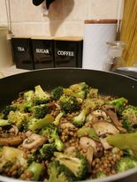

Broccoli-Mushroom-Lentil Single Dish

Description
Superfood!!! One of the healthiest foods I cook. Filling and delicious.
Does not contain meat.
Ingredients
- 1 head of broccoli
- 250g mushrooms
- 1 canned lentil
- rice
- salt, pepper
- 1 tbsp soy sauce
- chili flakes (optional)
Steps
- Cut mushrooms and broccoli into arbitrary pieces.
Saute the mushrooms for about 10 minutes, then add the broccoli.
- Add the spices and soy sauce, then simmer under a lid until any
softness you like.
- When the broccoli has softened, add the lentils,
stir, saute for a couple of minutes.
- Serve with rice.